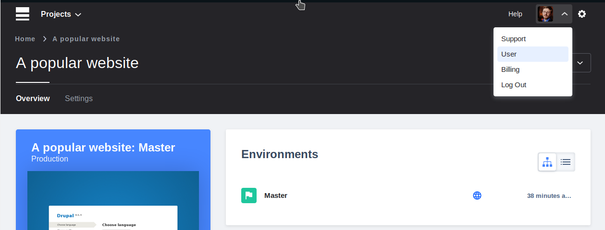
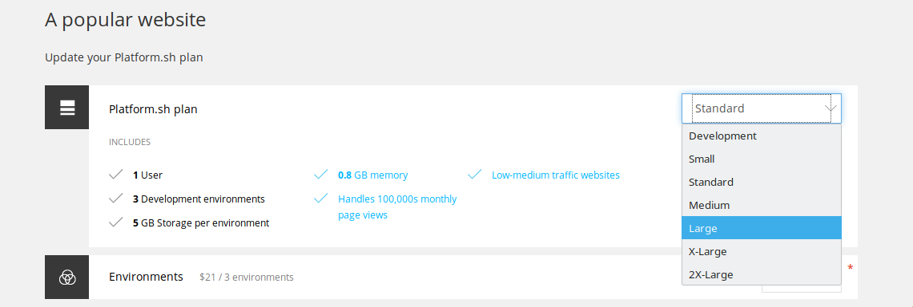
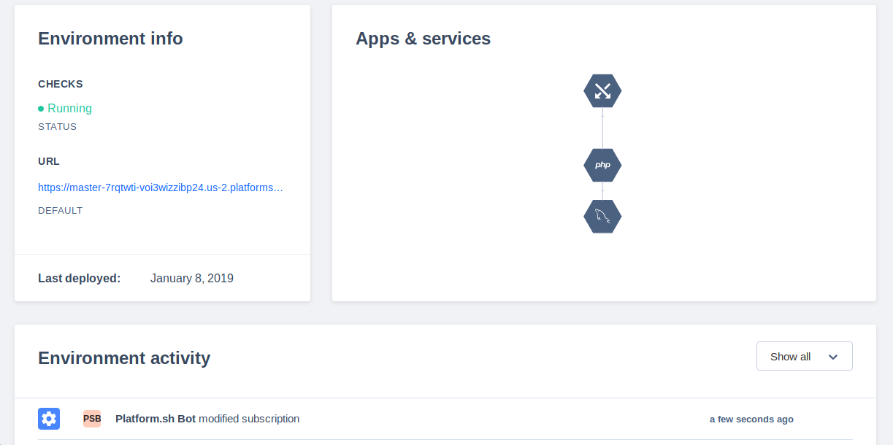
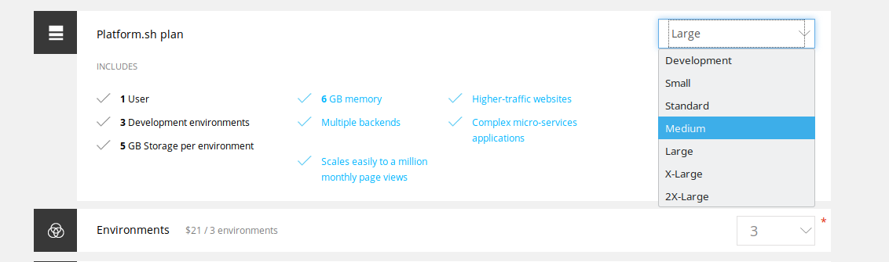

We have a huge sale tomorrow. Traffic is going to skyrocket!

That's easy. Just go to your user page...

... And pick a new plan size. Scale as high as you need.

The site will redeploy in seconds.
5x the memory and CPU are now yours!

You can scale back down to any plan size anytime.
Plans are prorated. Pay for only the time you use!
You can scale from the command line, too.
Including from your own scripts.
Problem: "Woah, we have a big news announcement tomorrow. Will the site handle it?"
Script
Show UI.
Go to Accounts, select project config.
Change size from Standard to Large, hit save.
*site redeploys*
Overlay: "Five times as much CPU and RAM, at the click of a button."
Overlay: "Well, our traffic is back down now that the news has passed."
Change site from Large to Medium, hit save. (Because there's still some residual extra traffic.)
*site redeploys*
Shows
Easy scaling
Scale for events
Cost control